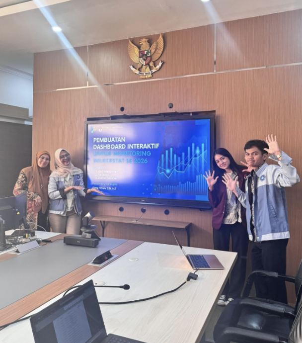

Photo caption: the presentation for geolocation dashboard built for the Wilkerstat Program.
[WRITER'S NOTE] During my time at BPS, I found myself working in the middle of preparations for Sensus Ekonomi 2026, the country's upcoming economic census. Although it was still 2025, preparations were already underway.
Hence, during my internship, my supervisor asked me with developing an application to help them with their work in preparation for Sensus Ekonomi 2026. I came up with the idea of building a geolocation-based interactive dashboard to monitor the survey progress of MSMEs (UMKM) across West Java. The dashboard featured an interactive map that could be zoomed from the provincial level down to individual neighborhoods, with regional metadata available at every level from cities and regencies to smaller neighborhoods. A heatmap was also added to let them know which areas had the most survey data collected. The tech stack used were: Python, SQL, Streamlit, Github, Google Cloud Platform, API, TiDB (Database), and BPS private platform.
Other than the main project, my colleague and i was also tasked to perform a data scraping and validation throughout the whole province in support of Wilkerstat program. Making sure those messy scraped data was cleaned and organized so they could be used for statistical reporting. The tech stack used for web scraping and browser automation are BeautifulSoup and Selenium library from Python while the data validation was done in excel.